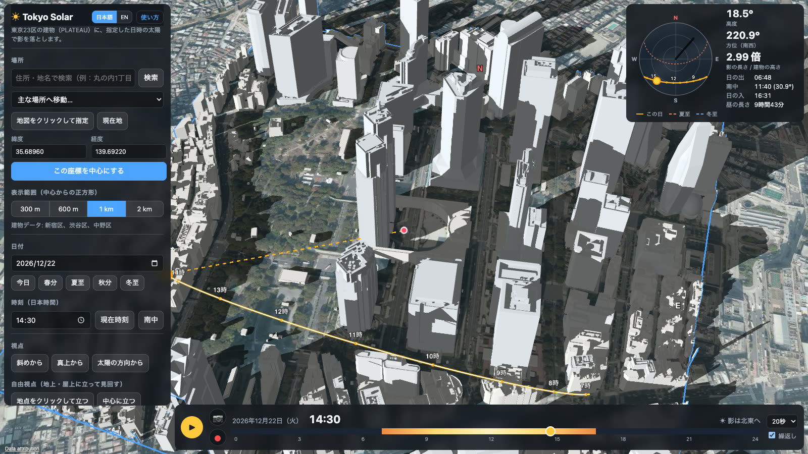
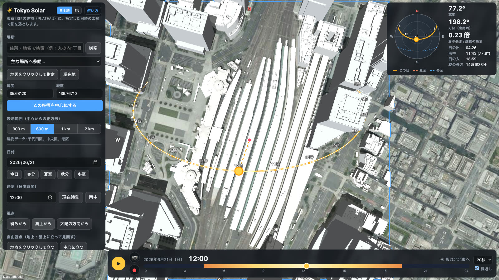
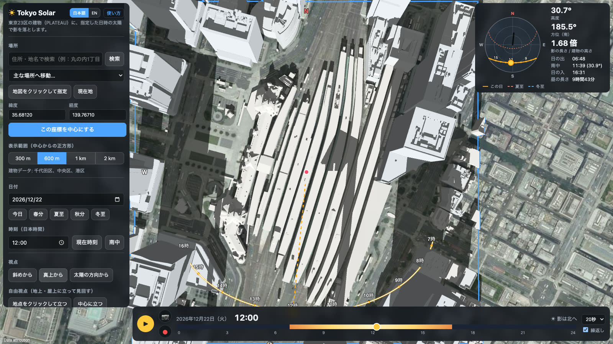
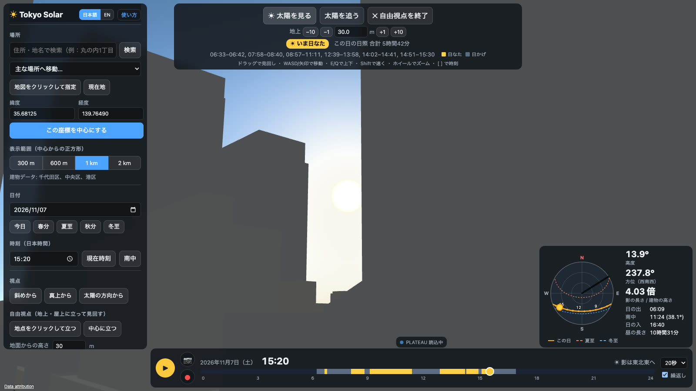
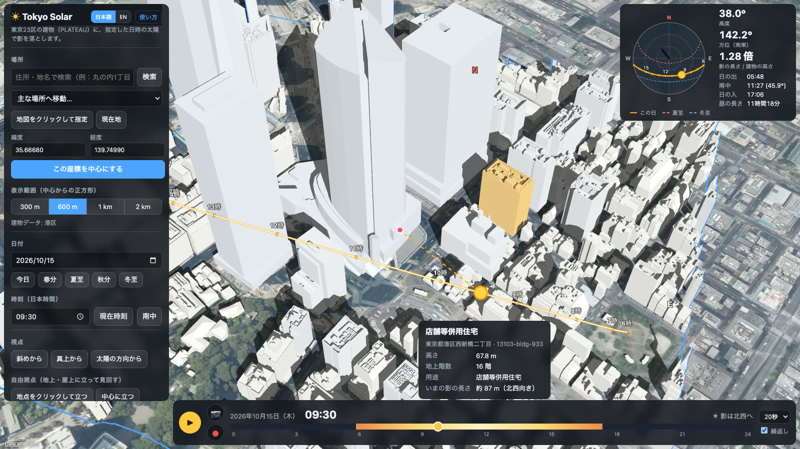

その場所は、
何時に日陰になる？
東京23区の実際の建物に、好きな日付・時刻の太陽で影を落とす 3D 日影シミュレーター。日の出から日の入までの影の動きを再生し、地上から太陽を見上げ、画像や動画で保存できます。

「この部屋、冬の午後に日は当たる？」
「あの公園のベンチは、何時から日陰？」
日当たりは、季節と時刻と、まわりの建物で決まります。でも、それを現地で確かめられるのは、その日・その時刻だけ。
TOKYO SOLAR は、国土交通省の 3D 都市モデル PLATEAU の建物に、天文計算で求めた太陽の光を当てて影を描きます。冬至の朝も、夏至の夕方も、画面の上で何度でも確かめられます。
日の出から日の入まで、影の動きを再生。
▶ を押すと、その日の日の出から日の入までを 10〜80 秒で再生します。● を押せば、そのまま動画（MP4）で保存できます。
同じ正午でも、夏と冬でこんなに違う。
東京駅・丸の内を真上から。日付を変えるだけで、季節による影の違いがひと目でわかります。春分・夏至・秋分・冬至はボタン一つで選べます。

太陽の高度は 77°。影は高さの4分の1ほどで、ほぼ足元に収まります。

太陽の高度は 31°。正午でも影は高さの1.7倍。100 m のビルなら 168 m 先まで日陰です。

その窓から、太陽は見える？
- 好きな場所に立つ：地図をクリックした地点に。建物をクリックすれば、その屋上に立てます
- 高さを指定：地面から何メートルかを入力。マンション10階なら約 30 m
- 太陽を見る・追う：ボタン一つで太陽の方向へ。再生中も太陽を向き続けます
- 1日の日照がわかる：立った地点に日が当たる時間帯と合計時間を自動で計算。タイムバーが日なた・日かげの帯になります
- 歩いて見回す：ドラッグで見回し、WASD で移動、EQ で上下
しくみと機能
PLATEAU の建物と国土地理院の地形・航空写真を、選んだ範囲の分だけインターネットから読み込み、天文計算で求めた太陽の向きで影を描きます。
実際の建物で計算
国土交通省 PLATEAU の 3D 都市モデル。建物から地面へ、建物から建物へ落ちる影を描きます。
天文計算の太陽位置
米国海洋大気庁（NOAA）の計算式で、日付・時刻・場所から太陽の高度と方位を求めます。大気差も補正します。
調べる範囲を選ぶ
住所検索・主な場所・地図クリック・緯度経度で中心を決め、正方形の範囲を表示します。
画像と動画で保存
今の画面を PNG で、1日の影の動きを MP4 で保存。日時・太陽の高度と方位が画面に入ります。
太陽の通り道
その日の太陽の通り道を 3D と天空図で表示。夏至・冬至の軌跡と比べられます。日の出・南中・日の入の時刻も。
日本語と英語
画面の表示と、保存する画像・動画の文字を、ワンクリックで切り替えられます。使い方マニュアルも日英対応。
そのビルの影は、何メートル？
- クリックで調べる：名前・用途・高さ・地上階数・住所
- 今の影の長さと向き：高さ 67.8 m のビルなら、秋の朝 9:30 で約 87 m、北西へ
- 時刻を動かせば：影の長さもその場で変わります

使い方は3ステップ
引っ越し先のマンションの、冬の日当たりを調べる例です。
場所を選ぶ
住所で検索するか、地図をクリックして中心を決めます。範囲は 300 m〜2 km から。
日付を決める
「冬至」ボタンで、いちばん影が長くなる日に。時刻はスライダーで動かします。
再生して確かめる
▶ で1日の影の動きを再生。自由視点でその階の高さに立ち、太陽が見えるか確かめます。
TOKYO SOLAR
建物と地形のデータは、表示中の範囲の分だけ読み込みます。利用にはインターネット接続が必要です。
ダウンロードページへ